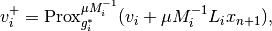

adupdates¶
- odl.solvers.nonsmooth.alternating_dual_updates.adupdates(x, g, L, stepsize, inner_stepsizes, niter, random=False, callback=None, callback_loop='outer')[source]¶
Alternating Dual updates method.
The Alternating Dual (AD) updates method of McGaffin and Fessler [MF2015] is designed to solve an optimization problem of the form
min_x [ sum_i g_i(L_i x) ]
where
g_iare proper, convex and lower semicontinuous functions andL_iare linearOperators.- Parameters:
- gsequence of
Functionals All functions need to provide a
Functional.convex_conjwith aFunctional.proximalfactory.- Lsequence of
Operators Length of
Lmust equal the length ofg.- x
LinearSpaceElement Initial point, updated in-place.
- stepsizepositive float
The stepsize for the outer (proximal point) iteration. The theory guarantees convergence for any positive real number, but the performance might depend on the choice of a good stepsize.
- inner_stepsizessequence of stepsizes
Parameters determining the stepsizes for the inner iterations. Must be matched with the norms of
L, and convergence is guaranteed if theinner_stepsizesare small enough. See the Notes section for details.- niterint
Number of (outer) iterations.
- randombool, optional
If
True, the order of the dual upgdates is chosen randomly, otherwise the order provided by the listsg,Landinner_stepsizesis used.- callbackcallable, optional
Function called with the current iterate after each iteration.
- callback_loop{'inner', 'outer'}, optional
If 'inner', the
callbackfunction is called after each inner iteration, i.e., after each dual update. If 'outer', thecallbackfunction is called after each outer iteration, i.e., after each primal update.
- gsequence of
Notes
The algorithm as implemented here is described in the article [MF2015], where it is applied to a tomography problem. It solves the problem
where
 are proper, convex and lower semicontinuous functions
and
are proper, convex and lower semicontinuous functions
and  are linear, continuous operators for
are linear, continuous operators for
 . In an outer iteration, the solution is found
iteratively by an iteration
. In an outer iteration, the solution is found
iteratively by an iterationwith some
stepsizeparameter according to the proximal
point algorithm. In the inner iteration, dual variables are introduced for
each of the components of the sum. The Lagrangian of the problem is given
by
according to the proximal
point algorithm. In the inner iteration, dual variables are introduced for
each of the components of the sum. The Lagrangian of the problem is given
byGiven the dual variables, the new primal variable
 can be calculated by directly minimizing with respect to
can be calculated by directly minimizing with respect to
 . This corresponds to the formula
. This corresponds to the formulaThe dual updates are executed according to the following rule:

where
is given by the formula above and is a
diagonal matrix with positive diagonal entries such that
 is positive semidefinite. The variable
is positive semidefinite. The variable
inner_stepsizesis chosen as a stepsize to theFunctional.proximalto theFunctional.convex_conjof each of thegs after multiplying withstepsize. Theinner_stepsizescontain the elements of in one of the following ways:
in one of the following ways:Setting
inner_stepsizes[i]a positive float corresponds to the choice .
corresponds to the choice .Assume that
g_iis aSeparableSum, then settinginner_stepsizes[i]a list of positive floats corresponds to the choice of a block-diagonal matrix, where each block corresponds to one of the space
components and equals .Assume that
g_iis anL1Normor anL2NormSquared, then settinginner_stepsizes[i]ag_i.domain.element corresponds to
the choice .
corresponds to
the choice .
References
[MF2015] McGaffin, M G, and Fessler, J A. Alternating dual updates algorithm for X-ray CT reconstruction on the GPU. IEEE Transactions on Computational Imaging, 1.3 (2015), pp 186--199.